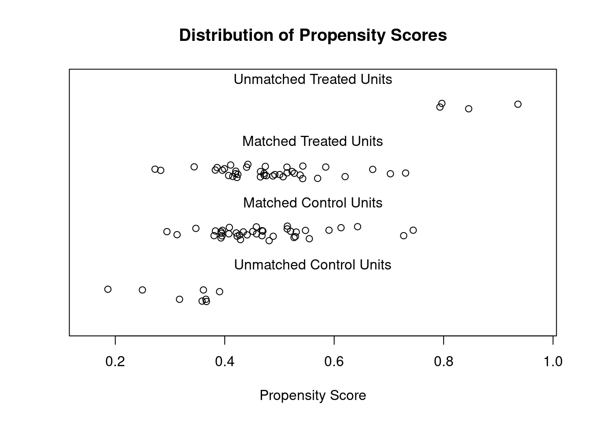

On a vu dans le chapitre précédent que les comparaisons simples réalisées entre les premières et les dernières aires à avoir été formellement protégées pose problème.
On va maintenant chercher à renforcer la comparabilité entre le goupe de traitment et le groupe de contrôle en réalisant un appariemment (cf. diapos de présentation).
On va utiliser le package {MatchIt}: ne pas hésiter à se référer à la documentation du package : [TODO: insérer le lien vers la doc]
On va commencer par réaliser quelques ajustements, car {MatchIt} requiert qu’aucune valeur des variables mobilisées ne soit manquante. On va donc retirer les observations comportant des NA.
Code
library(tidyverse) # Simplifie la manipulation de donnéeslibrary(lubridate) # Simplifie les opérations sur des dateslibrary(sf) # Pour traiter les données spatialeslibrary(MatchIt) # Pour réaliser les appariements.library(cobalt) # Pour les tests d'équilibre sur l'appariementlibrary(gt) # Pour faire de jolies tableslibrary(stargazer) # Pour préssenter les résultats de régressions# Désactiver les notations scientifiquesoptions(scipen =999)# On recharge les données préparées dans le chapitre 3load("data/ch3_AP_Vahatra.rds")# Harmoniser les données entre avant et après.load("data/rct_AP_Mada.rds")rct_AP_Mada_noNA <- rct_AP_Mada %>%# On enlève les observations pour lesquelles il manque des valeursfilter(!is.na(`Déforestation 1996-2016 (%)`)) %>%filter(!is.na(dist_ville)) %>%# La vatiable de traitement doit être recodée en [0, 1]mutate(traitement =ifelse(Groupe =="Traitement", 1, 0)) %>%rename(surface_ha =`Surface (ha)`, couv_foret_96 =`Couvert forestier en 1996 (%)`)rct_AP_Mada_noNA %>%group_by(Groupe) %>%summarize(`Nombre d'aires protégées`=n()) %>%gt() %>%tab_header("Observations par groupe avant appariemment") %>%tab_source_note("Source : Association Vahatra et Carvalho et al. 2018")
Observations par groupe avant appariemment
Groupe
Nombre d'aires protégées
Controle
47
Traitement
43
Source : Association Vahatra et Carvalho et al. 2018
Pour commencer, on va estimer le un modèle qui estime dans quel mesure la propension pour une aire d’avoir été protégée avant 2015 dépend de sa taille, de son taux de couverture forestière en 1996, de son altitude, de son caractère accidenté et de sa distance d’une ville d’au moins 5000 habitants.
Cette spécification peut se représenter selon l’équation suivante : [TODO: revoir la spécification au format standard]
\[
T = A + B + C + D + E
\]
Où Y est le traitement, A est la taille (surface en hectares, B le taux de couverture forestière en 1996, C l’altitude, D, le caractère accidenté et E le temps de parcours à une ville d’au moins 5000 habitants.
Cette même formule est encodée en R de la manière suivante :
A matchit object
- method: 1:1 nearest neighbor matching without replacement
- distance: Propensity score [common support]
- estimated with logistic regression
- common support: units from both groups dropped
- number of obs.: 90 (original), 78 (matched)
- target estimand: ATT
- covariates: surface_ha, couv_foret_96, altitude, indice_accidente, dist_ville
On peut maintenant observer les équilibres entre les groupes traités et contrôle avant et après l’appariement.
Code
summary(def_96_16_match)
Call:
matchit(formula = pscor, data = rct_AP_Mada_noNA, method = "nearest",
distance = "glm", discard = "both", replace = FALSE, family = binomial(link = "probit"))
Summary of Balance for All Data:
Means Treated Means Control Std. Mean Diff. Var. Ratio
distance 0.5123 0.4462 0.4600 1.7294
surface_ha 64859.7293 71636.6002 -0.0856 0.5216
couv_foret_96 61.8218 55.4658 0.2363 1.1522
altitude 538.6298 475.9134 0.1328 0.7177
indice_accidente 12.0830 10.7187 0.1667 1.0636
dist_ville 233.3141 152.0447 0.3811 2.1820
eCDF Mean eCDF Max
distance 0.1409 0.2622
surface_ha 0.0910 0.2509
couv_foret_96 0.0795 0.2425
altitude 0.0890 0.2103
indice_accidente 0.0578 0.1390
dist_ville 0.1333 0.2588
Summary of Balance for Matched Data:
Means Treated Means Control Std. Mean Diff. Var. Ratio
distance 0.4783 0.4712 0.0497 0.9995
surface_ha 67277.5891 56596.5970 0.1348 0.7366
couv_foret_96 60.8113 60.4309 0.0141 1.3400
altitude 518.5203 503.7378 0.0313 0.8548
indice_accidente 11.6356 11.6417 -0.0007 1.0171
dist_ville 182.9262 166.4807 0.0771 0.8322
eCDF Mean eCDF Max Std. Pair Dist.
distance 0.0379 0.1538 0.0883
surface_ha 0.1217 0.2821 1.0327
couv_foret_96 0.0473 0.1795 0.8761
altitude 0.0490 0.1282 1.0065
indice_accidente 0.0316 0.0769 1.1074
dist_ville 0.0692 0.2051 0.3803
Sample Sizes:
Control Treated
All 47 43
Matched 39 39
Unmatched 6 0
Discarded 2 4
Exercice : Etudiez les tables ci-dessus. Quel effet a eu l’appariement sur l’équilibre des variables entre le groupe de traitement et le groupe de contrôle ? Combien d’observation ont été écartées.
On peut également représenter l’équilibre entre les variables avant et après traitement avec les graphiques suivants.
Code
bal.plot(def_96_16_match, var.name ="dist_ville", which ="both")

Exercice : Quel effet a eu l’appariement sur la varialbe de distance à la ville ? Les autres variables d’appariement produisent-elles un effet aussi visible ?
Le modèle qu’on utilise pour estimer l’impact est très proche de celui exposé ci-dessus, à la différence que la variable de traitement passe dans la partie droite, et qu’elle est remplacée par la déforestation.
\[
Y = T + A + B + C + D + E
\]
Où Y est la déforestation, T est le traitement, A est la taille (surface en hectares, B le taux de couverture forestière en 1996, C l’altitude, D, le caractère accidenté et E le temps de parcours à une ville d’au moins 5000 habitants.
Cette formule est codée en R de la manière suivante :
Code
# On extrait la donnée de l'appariement#| code-fold: falseestimp <-`Déforestation 1996-2016 (%)`~ traitement + surface_ha + couv_foret_96 + altitude + indice_accidente + dist_ville
On va donc réaliser une régression, en tenant compte des pondérations générées par l’algorithme d’appariement (variable “weight”).
Code
# On extrait les données de l'appariementdef_96_16_match_data <-match.data(def_96_16_match)# On effectue une régression simple avec la formule précédentedef_96_16_match_est <-lm(formula = estimp,data = def_96_16_match_data,weights = weights)# On visualise les résultatsstargazer(def_96_16_match_est, type ="text")